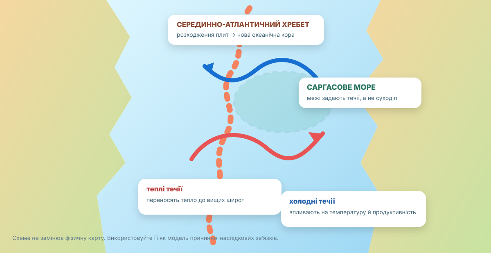

Скласти доказовий «паспорт» Атлантики
Покажіть, як положення між материками, тектоніка, течії та господарська діяльність разом формують сучасний океан.
Оцінювання
Карта — 2 б.; історія — 1 б.; хребет — 3 б.; течії — 2 б.; ресурси — 1 б.; CER — 1 б.
Карта: знайдіть «скелет» океану
Упишіть по одному прикладу.
| Об’єкт | Назва |
|---|---|
| море | |
| затока | |
| острів / архіпелаг | |
| протока |
Назва й дослідження: як змінювалося знання?
Назву «Атлантичний» традиційно пов’язують з Атласом у давньогрецькій традиції. Заповніть три етапи не датами, а новими можливостями пізнання океану.
| Етап | Що стало відомо? |
|---|---|
| раннє мореплавство | |
| океанські переходи | |
| сучасна океанографія |
Серединно-Атлантичний хребет: океан росте зсередини

Це модель. Перевіряйте її за реальною картою.
NOAA наводить для Серединно-Атлантичного хребта повільне розходження приблизно 2–5 см/рік.
За умовних 3 см/рік скільки кілометрів це за 1 млн років?
Як може існувати море без берегів?
Саргасове море — єдине море без суходільної межі: його контури задають течії Північноатлантичного субтропічного кругообігу.
NOAA: Sargasso SeaРесурс → користь → ризик
Оберіть один приклад: рибальство, судноплавство, шельфові ресурси або підводні кабелі. Побудуйте ланцюг: природна передумова → використання → вигода → екологічний ризик → спосіб зменшення ризику.
CER-висновок
Доведіть тезу: «Атлантичний океан — активна природна система, що постійно змінюється».
Звірте свою модель
Тектоніка
Серединно-Атлантичний хребет лежить на межі розходження плит. Магма піднімається, застигає і формує нову океанічну кору. Тому океанічне дно оновлюється.
Течії
Теплі й холодні течії переносять тепло, впливають на узбережжя та формують великі кругообіги.
Саргасове море
Його межі задають течії, а не береги. Плаваючі саргасові водорості створюють важливе середовище для багатьох морських організмів.
Освоєння
Судноплавство, рибальство й освоєння шельфу дають ресурси, але водночас створюють ризики забруднення та виснаження біоресурсів.
«Одна точка Атлантики»
Оберіть Ісландію, Ньюфаундлендську банку, Саргасове море, Гвінейську затоку або Карибське море. У 5–7 реченнях: де розташовано → природна особливість → використання → ризик → доказ.